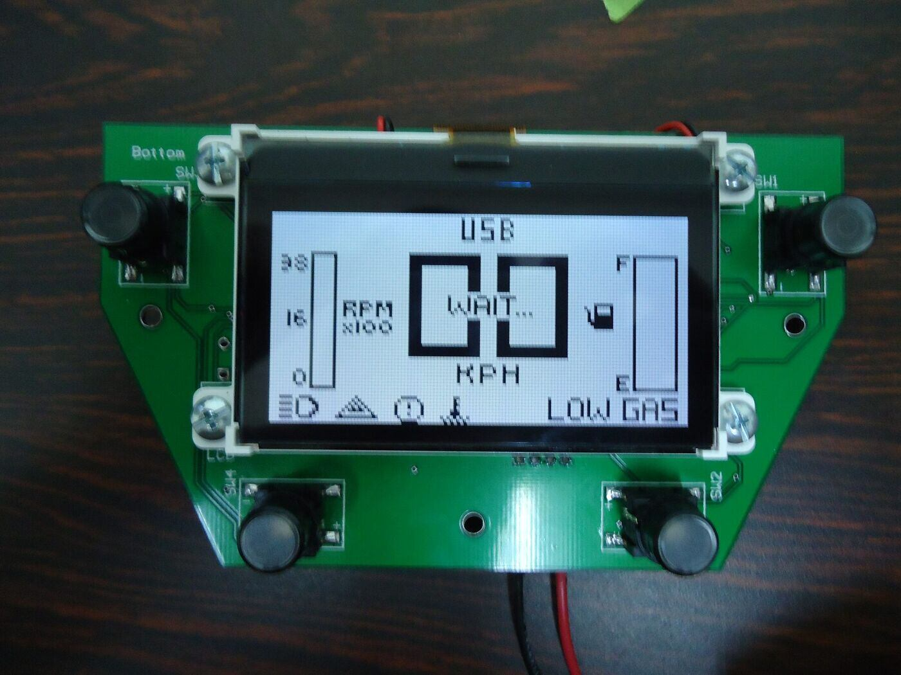
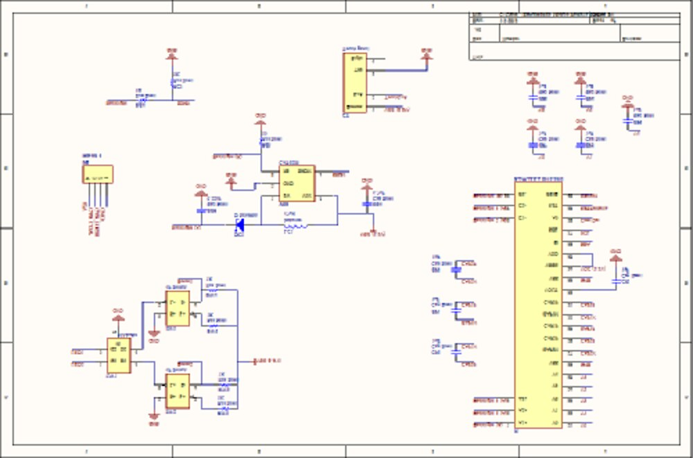

Steering-Wheel Display
The driver's display and control panel for the off‑road cars built by the Baja SAE team of Universidad Simón Bolívar ("Baja USB"). A chevron‑shaped board that mounts on the steering‑wheel hub: a graphic LCD in the centre shows speed, RPM, fuel and warning tell‑tales, and four illuminated buttons at the corners work the turn signals, hazards, night lights and handbrake indicator. It is the companion to the dashboard module — the two talk over the car's CAN bus. 2011‑2012.
The board on the bench — speed, RPM bar and fuel bar on the LCD, a button at each corner.
Why
The driver's hands stay on the wheel, so the display and the switches go on the wheel too. Speed, RPM, fuel and the warning tell‑tales are all on one small graphic LCD; the turn signals, hazards, night lights and handbrake indicator are four buttons within thumb‑reach. A single wire loom to the hub — power and CAN — carries everything.
The Display
A graphic LCD (with a touch panel) driven over SPI, redrawn whenever a CAN frame arrives. It shows a large speed readout in KPH (or WAIT… until the first frame), an RPM ×100 bar down the left edge, a fuel bar (E–F) with a pump icon down the right, and a row of tell‑tales along the bottom — headlights, high beam, temperature, brake and a LOW GAS warning.

The full display — RPM and fuel bars, the tell‑tale row, and a LOW GAS warning.
The values come from the dashboard's 0x111 frame — RPM = data[0] / 5 (clamped to 40 levels), speed units and tenths from data[1], a temperature flag from data[2] — and fuel from data[0] of 0x222. The white‑LED backlight is a PWM‑dimmed boost (CAT4238): bright by day, dimmed in night mode.
The Buttons
Four illuminated tactile switches on a keyboard‑interrupt port, one at each corner of the board:
| Button | Action |
|---|---|
| SW1 / SW3 | right / left turn signal (toggle) |
| SW1 + SW3 | hazards — both indicators |
| SW2 | night lights (toggle) — also dims the backlight and the corner LEDs |
| SW4 | handbrake / brake indicator (toggle) |
Each press updates the four corner LEDs, sends a 5‑byte frame to the LCD over SPI, and transmits the state on CAN 0x333 — one byte, bit0 night, bit1 right, bit2 left, bit3 brake. The dashboard module reads that frame and drives the actual lamps; the turn arrows blink by re‑arming a timer interrupt.
Firmware
The MCU is a Freescale MC9S08DZ60 (8‑bit S08 with on‑chip MSCAN), CodeWarrior + Processor Expert 3.07, flashed through the 6‑pin BDM header with a P&E Multilink. The main loop is tiny — a start‑up routine, then poll the buttons; everything else happens in interrupt handlers:
init_routine(); // backlight ramp + LED chase
for(;;) Botones(); // on a keypress: update LEDs, send SPI + CAN 0x333
// CAN1_OnFullRxBuffer: 0x111 / 0x222 -> reformat, push to the LCD over SPI
// Botones_OnInterrupt: decode SW1..SW4 (and the SW1+SW3 hazard combo)
// Timer_OnInterrupt: blink the turn-signal LEDsAn alternate MCF51JM128 (ColdFire V1) build of the same application is also in the repository.
Hardware
A chevron / arrow outline — wide at the top, pointed at the bottom — so it sits on a steering‑wheel spoke, with the LCD framed in the centre and a button at each corner (Altium Designer).
| Ref | Part | Function |
|---|---|---|
| M1 | Freescale MC9S08DZ60 (32‑pin) | MCU |
| P1 + CT | graphic LCD + touch panel | the display |
| UC1 | MAX3051 | 3.3 V CAN transceiver |
| UC2 | CAT4238 + inductor / Schottky | white‑LED backlight boost driver |
| UR1 | LM2937‑3.3 | 3.3 V regulator, from the car rail |
| UW1 | dual N‑MOSFET array | backlight / LED switching |
| SW1–SW4 | illuminated tactile switches | driver controls |
| PS1 | 4‑pin header | CANH, CANL, +V, GND to the car harness |
| PB1 | 6‑pin (2×3) header | BDM programming / debug |

Schematic overview — MCU at right, display connector up top, CAN / power / backlight blocks mid‑left, the switches bottom‑left.
Posted In:
Vehicles